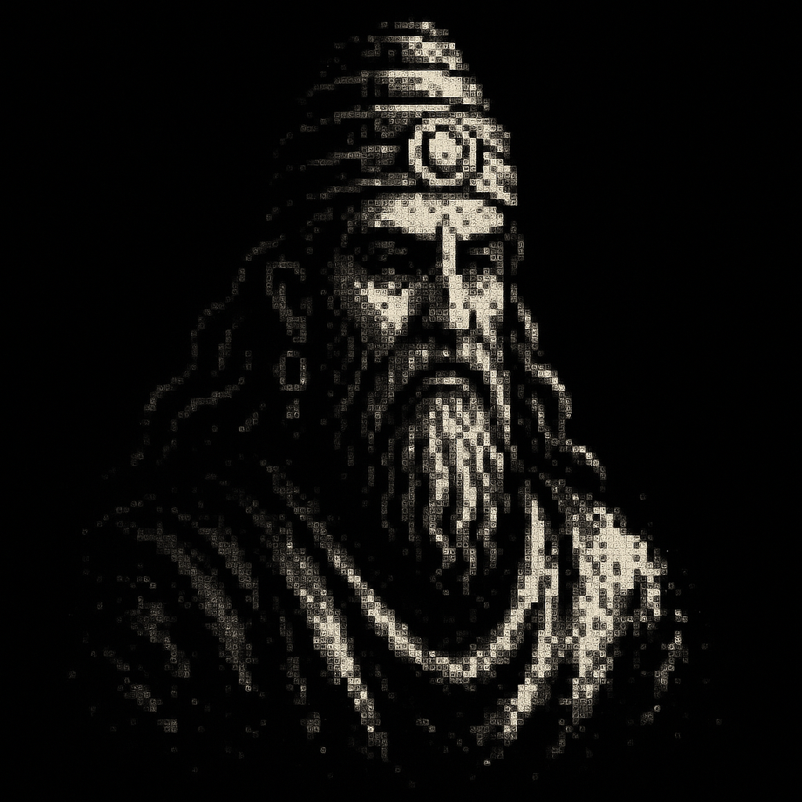

Talk to every philosopher, save your conversations, and sync across your glasses, the web & Android. 7 days free, then $8/mo.
One quote, every so often. Between quotes the glass stays dark. Tap the ring to show a quote early, tap again to reset the timer. Double-tap to exit.
Nothing yet. Pick a philosopher → tap the glass → speak.
Choose a philosopher above, then send your first turn.
No conversations yet. Open Speak on the glasses or the phone to start one.
No sessions yet.
Pick a day above to see the exchanges.
—
Philosophy on Glass. 2,801 quotes across 17 philosophers and 8 traditions.
Everything works offline as a Seeker. Link your glasses below and your Today list, habits, and weekly plan stay in step with the enkiRIDION Android app and enkiridion.com.
Built with Vite + TypeScript + @evenrealities/even_hub_sdk.
Changes the app, the glasses display, and the quotes.
Used by every philosopher conversation. Locks the Whisper transcription language, and your context is injected as quiet awareness so the philosophers can answer with what they know about your life — without ever listing it back at you.
You choose the amount. Stripe hosts the checkout, so no card details ever touch enkiRIDION.